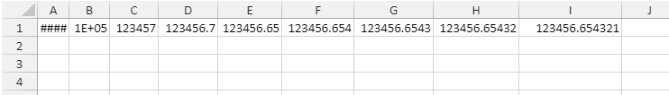
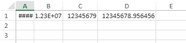
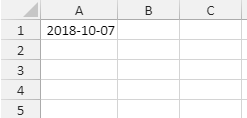
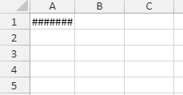
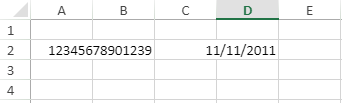

Users can choose to display numbers and dates in two modes, Mask and Overflow. By default, the users can mask the data in the cells based on the width of the columns. This is known as the Mask mode. But SpreadJS also allows users to unmask the data in the cells and let it overflow into adjacent cells. This is known as the Overflow mode.
Let's discuss about each mode in detail:
The mask mode feature is particularly useful when users need to deal with spreadsheets containing hundreds or thousands of columns with different widths. The data is displayed dynamically according to the space available in the column.
For instance - If a user types "123456.654321 in a cell, the data in the cell will be displayed differently depending upon the column width as shown in the image below -
123456.654321 -> 123456.65432 -> 123456.6543 -> 123456.654 -> 123456.65 -> 123456.7 -> 123457 -> 1E+05 -> ####

Rules Applied while Displaying Numbers
The following rules are applied for displaying numbers:

Rules Applied while Displaying Dates
The following rule is applied for displaying dates:
 
Using Code
Refer to the following example code in order to display dates and numbers according to the column width.
| JavaScript |
Copy Code
|
|---|---|
// Displaying Numbers var spread = new GC.Spread.Sheets.Workbook(document.getElementById("ss")); var sheet = spread.getActiveSheet(); sheet.suspendPaint(); var width = [35, 45, 54, 66, 71, 80, 88, 95, 114]; for (var c = 0; c < 9; c++) { sheet.setValue(0, c, 123456.654321); sheet.setColumnWidth(c, width[c]); } sheet.resumePaint(); // Displaying Dates var spread = new GC.Spread.Sheets.Workbook(document.getElementById("ss")); var sheet = spread.getActiveSheet(); sheet.suspendPaint(); var date = new Date(2018, 9, 7); sheet.setValue(0, 0, date); sheet.setFormatter(0, 0, 'yyyy-mm-dd'); sheet.setColumnWidth(0, 80); sheet.resumePaint(); |
|
Note: The following limitations should be kept in mind while formatting dates and numbers in SpreadJS -
SpreadJS automatically displays "####", scientific notation, and rounded off integer values, when the column is not wide enough to display the entire number. However, you can change this default SpreadJS behavior to prevent the cell content from getting masked by using the NumbersFitMode workbook option and setting its value to 1.
This NumbersFitMode option will help you to display the entire number or date by allowing the cell content to overflow into the adjacent cells when the number or date length is bigger than the column width. This option is also applicable to the dates as well.

Refer to the following example to allow the dates and numbers to overflow when their length exceed the column width in a cell.
| JavaScript |
Copy Code
|
|---|---|
//set numbersFitMode option to 1 spread.options.numbersFitMode = 1; //set date var d = new Date(); activeSheet.setValue(1, 3, new Date(2011, 11, 11)); //set number activeSheet.getCell(1, 1, GC.Spread.Sheets.SheetArea.viewport).text("12345678901239"); |
|